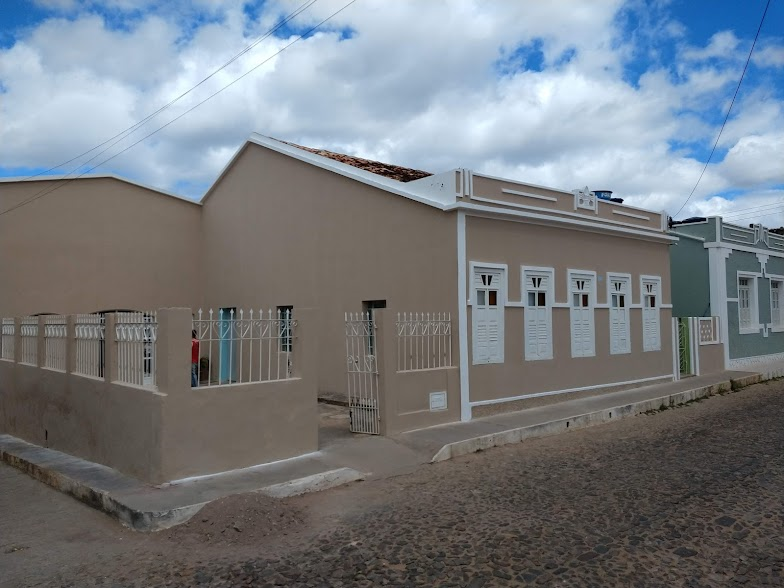

Clean
Uma comunidade de fé e amor em Palmeiras-BA

Bem-vindos à nossa igreja! Estamos aqui para compartilhar a palavra de Deus e viver em comunidade. Junte-se a nós em nossos cultos e atividades.
Eu tinha 34 anos quando usei a palavra “crônica” na frente da palavra “dor” pela primeira vez. Eu disse isso em voz baixa, me perguntando se cinco anos de sofrimento eram tempo suficiente para merecer a frase. Quando essa porta de sofrimento se abriu diante de mim, eu não entendi que o caminho para crescer na fé poderia doer tanto.
Na primeira carta do apóstolo Pedro, ele encoraja os crentes a perseverarem no sofrimento por seu efeito refinador da fé. Ele nos aponta para o peso da glória eterna que está por vir, tornando nossos sofrimentos menores do que parecem à primeira vista. Ele nos dá confiança para nos confiarmos a um Pai amoroso.
Pedro me faz contorcer, no entanto, quando leio que há lições que o cristão deve aprender no fogo refinador do sofrimento. “Vocês se alegram nisso, embora agora, por um curto período de tempo, tenham lutado em várias provações, para que a genuinidade da sua fé — mais valiosa do que o ouro que perece, embora refinado pelo fogo — possa resultar em louvor, glória e honra, na revelação de Jesus Cristo” (1 Pe 1:6–7 HCSB, ênfase adicionada).
Quando o próximo passo da santificação nos coloca diretamente na frente da porta do sofrimento — seja ele rotulado como "câncer de mama" ou "doença de Lyme", podemos responder de duas maneiras. Podemos desperdiçar a oportunidade de crescer em piedade nos tornando amargos, ou podemos cruzar o limiar confiantes de que o que recebemos da mão de Deus é para sua glória e nosso bem.
Glenna Marshall é esposa de pastor e mãe de dois filhos. Ela é autora de The Promise Is His Presence, Everyday Faithfulness e Memorizing Scripture. Ela escreve regularmente sobre alfabetização bíblica, sofrimento e a fidelidade de Deus em seu site. Ela é membro da Grace Bible Fellowship em Sikeston, Missouri.
Se o sofrimento é a porta pela qual você deve passar, então anime-se nas maneiras pelas quais Deus o usará para o bem em sua vida.
Aprendemos a verdadeira natureza da nossa fé quando ela é preparada contra a dor, a tristeza ou a perseguição. Quando nossos corações estão sobrecarregados com a tristeza, ou quando nossos corpos são devastados pela doença, Deus pode garantir nossa confiança.
Eu costumava temer que minha fé na bondade de Deus não fosse forte o suficiente para suportar anos de dor física, mas o sofrimento crônico queimou qualquer ilusão de que a salvação depende de mim. Nós perseveramos, e é Deus quem nos preserva. Nos piores momentos de dor, minha fé na bondade de Deus parecia tão frágil. Eu não conseguia pensar em fé de longo prazo, apenas no próximo passo à minha frente.
Mas Deus usou os momentos de perseverança de respiração a respiração para me ensinar que era seguro confiar nele para o próximo passo. Ele pode não ter removido meu sofrimento quando eu queria, mas ele estava comigo no meio dele. Meu sofrimento revelou que foi Deus quem me guardou, protegendo meu coração pela eternidade (1 Pe 1:5–7).
O sofrimento tem uma maneira de se instalar em sua vida e mente como a única coisa que importa. É difícil tirar seus pensamentos das articulações doloridas que surgem todas as noites ou dos efeitos colaterais exaustivos do tratamento e da medicação.
Mas Deus ainda pode trabalhar em nossa visão de túnel. Ele usou o pulso persistente da dor para murchar minha autossuficiência. Quando a doença despojou meu corpo de suas antigas confidências e embaçou minha mente com confusão, não me restou nada em que me apoiar além da obra de Cristo dentro de mim.
O mundo observa como nós, cristãos, lidamos com o sofrimento. Pode parecer estranho dizer ao seu amigo descrente que Deus não removeu sua dor, embora pudesse, mas a oportunidade de falar de sua fidelidade em seu sofrimento é solo fértil para o testemunho do evangelho.
Eu tive uma oportunidade dessas quando uma amiga descrente ponderou sobre minha confiança na bondade de Deus, embora eu ainda lidasse com dor crônica. "Gostaria de poder acreditar em algo tão solidamente", ela me disse. Esta era a porta pela qual eu havia orado por muito tempo para passar, e o fiz armada com as boas novas de Cristo, grata pela dobradiça de dor na qual a porta balançava.
Pedro nos aponta para Cristo repetidamente em sua carta como alguém que sofreu injustamente, mas vitoriosamente. Cristo sofreu por nós — mostrando-nos como sofrer bem. E Cristo sofreu por nossa causa — pendurado na cruz em nosso lugar. Ele esgotou a ira de Deus por nossos pecados para que pudéssemos desfrutar do peso ilimitado, eterno e imperecível da glória que vem depois de termos sofrido um pouco. Ele certamente nos guardará até que aquele Dia apareça (1 Pe 1:5).
Porque ele nos deu todas as bênçãos espirituais em Cristo, podemos trilhar o caminho do sofrimento sabendo que Cristo o percorreu primeiro e nos mostra como prosseguir (1 Pedro 2:21).
Embora meus anos com dor crônica tenham sido os mais difíceis da minha vida, a obra fiel de Deus produziu o fruto da perseverança que me preparou para a próxima provação. Eu finalmente pude caminhar pela porta ao lado do sofrimento com a confiança de que a estrada além estava pavimentada com o cuidado de Deus. Se Deus ordenou uma porta de sofrimento para você atravessar, você pode confiar que ele investiu tanto na sua perseverança quanto na sua restauração (1 Pe 5:10). Você pode atravessar o limiar doloroso sabendo que a estrada além é incomparavelmente curta em vista da herança que foi comprada e guardada para você.
Um pé na frente do outro, Christian. Você não sofre sem propósito, e você não sofre sozinho.
“Confessai, pois, os vossos pecados uns aos outros e orai uns pelos outros, para serdes curados. Muito pode, por sua eficácia, a súplica do justo” Tiago 5.16.
Eva, Marilene, Luciene e Ana Paula.
Família de Carmelina e Família de Erito.
Abel, Armando, Geane, Enzo e Luma.
Dagmar, Nemésio, Leide e João.
Despertamento da Igreja, Grávidas, Amanda.

Congregação Vila Jason Alves às 19:30

Culto de Oração às 19:30

Culto de Doutrina às 19:30

Escola Dominical às 10:00 e Culto Solene às 19:00
A UCP é dedicada ao ensino e crescimento espiritual das crianças, proporcionando atividades educativas e recreativas.
A história da Igreja Presbiteriana em Palmeiras, Bahia, é um relato de fé, resistência e transformação. Desde a chegada dos missionários norte-americanos no século XIX até a consolidação da igreja na região, essa narrativa reflete os desafios enfrentados por aqueles que buscavam introduzir uma nova visão religiosa em um contexto profundamente católico. Este livro busca explorar essa trajetória, destacando figuras centrais como Ashbel Green Simonton, George W. Chamberlain, William Alfred Waddell e João Capistrano de Souza, além de contextualizar a resistência local e a evolução da igreja em Palmeiras.
A história do presbiterianismo no Brasil começa no século XIX, em um contexto de profundas transformações sociais e religiosas. O país, predominantemente católico, estava prestes a receber uma nova corrente de fé que buscava não apenas a evangelização, mas também a promoção de um modelo de civilização e modernização. Essa chegada foi marcada pela determinação de missionários norte-americanos que, impulsionados por um forte senso de missão, viam no Brasil uma terra fértil para a disseminação de suas crenças.
Ashbel Green Simonton, um dos principais responsáveis pela introdução do presbiterianismo no Brasil, desembarcou no Rio de Janeiro em 12 de agosto de 1859. Ele era um jovem missionário que, com uma visão clara e um fervor religioso, estabeleceu a primeira igreja presbiteriana do país em 1862. Simonton não apenas fundou a igreja, mas também se dedicou à educação, criando escolas que promoviam a alfabetização e a formação moral, alinhadas aos princípios protestantes. Sua visão era de que a educação e a evangelização andavam de mãos dadas, e ele acreditava que a transformação social poderia ser alcançada por meio da instrução.
Após a fundação da primeira igreja no Rio de Janeiro, outros missionários começaram a se espalhar pelo Brasil, e a Bahia se tornou um dos focos de atuação. Em 1871, o missionário alemão Francis Joseph Christopher Schneider chegou a Salvador e, em 21 de abril de 1872, organizou a primeira Igreja Presbiteriana na capital baiana. Schneider enfrentou desafios semelhantes aos de Simonton, lidando com a forte resistência da população local, que estava profundamente enraizada nas tradições católicas.
A presença presbiteriana na Bahia começou a se consolidar, e outros missionários, como Alexander L. Blackford e George W. Chamberlain, se uniram a Schneider na tarefa de expandir a fé reformada. Chamberlain, em particular, se destacou por sua dedicação e visão, levando o evangelho a várias localidades do interior da Bahia.
O Brasil do século XIX era um país em transição, onde a Igreja Católica detinha um poder significativo, tanto espiritual quanto político. A resistência ao protestantismo não se limitava apenas à desconfiança religiosa; havia também um forte componente cultural. O catolicismo estava entrelaçado com a identidade nacional e local, e qualquer tentativa de introduzir uma nova religião era vista como uma ameaça à ordem estabelecida.
Os missionários presbiterianos, portanto, não apenas enfrentaram a resistência religiosa, mas também um ambiente social que não estava preparado para aceitar mudanças. A luta pela aceitação do protestantismo envolvia não apenas a pregação do evangelho, mas também a construção de instituições que pudessem oferecer educação e assistência social, criando um espaço onde a nova fé pudesse florescer.
Os missionários presbiterianos não viam sua missão apenas como uma tarefa religiosa, mas como parte de um projeto civilizador. Eles acreditavam que a introdução de valores protestantes, como a ética do trabalho, a educação e a moralidade, poderia transformar a sociedade brasileira. Essa visão estava alinhada com a ideia de modernização que permeava o pensamento ocidental da época, onde a educação e a ciência eram vistas como ferramentas essenciais para o progresso.
A Missão Central do Brasil, organizada sob diretrizes oriundas de Nova Iorque, buscava criar instituições que não apenas evangelizassem, mas também promoviam a educação e a saúde. Essa abordagem holística visava não apenas salvar almas, mas também melhorar as condições de vida das pessoas, especialmente nas áreas mais remotas e carentes do país.
A introdução do presbiterianismo em Palmeiras, então conhecida como Villa Bella das Palmeiras, encontrou forte resistência. A comunidade local, enraizada em tradições católicas, desconfiava das novas correntes religiosas. Os proprietários de terras se recusavam a vender propriedades para a construção de templos e escolas, considerando o protestantismo uma ameaça à ordem social estabelecida. Essa resistência foi um dos principais obstáculos enfrentados pelos missionários, que buscavam estabelecer uma base sólida para suas atividades.
Em 19 de novembro de 1901, o Rev. George W. Chamberlain conduziu a primeira profissão de fé em Palmeiras, reunindo mais de mil fiéis. Sua atuação foi fundamental para estabelecer os primeiros vínculos da missão na região, abrindo espaço para que o presbiterianismo começasse a se enraizar, mesmo diante da hostilidade inicial. Chamberlain, que chegou ao Brasil em 1862, se destacou como um evangelizador visionário, deixando um legado duradouro na história do protestantismo na região.
O Rev. William Alfred Waddell, que chegou ao Brasil em 1890, também desempenhou um papel crucial na expansão do presbiterianismo em Palmeiras. Em suas visitas, ele reconheceu o potencial da região, mas enfrentou as mesmas barreiras que Chamberlain. As tentativas de estabelecer uma escola central em locais como Itaberaba, Lençóis e Palmeiras foram frustradas pela forte presença católica. Diante dessa resistência, Waddell decidiu buscar um novo local para fundar o Instituto Ponte Nova, escolhendo a Fazenda Ponte Nova, na Chapada Diamantina, como o espaço ideal para desenvolver suas obras missionárias.
João Capistrano Nonato de Souza é uma figura central na história da Igreja Presbiteriana em Palmeiras, Bahia. Sua trajetória é marcada por um profundo compromisso com a fé reformada e uma dedicação incansável à evangelização em uma região que, à época, era predominantemente católica e resistente a novas correntes religiosas. Este capítulo explora a vida e a obra de Capistrano, destacando seu papel como pregador, líder comunitário e a influência que exerceu na formação da identidade presbiteriana na região.
Nascido em um contexto de forte tradição católica, Capistrano foi um autodidata que se destacou por sua busca incessante por conhecimento e pela verdade espiritual. Sua conversão ao protestantismo foi um marco em sua vida, levando-o a se tornar um dos primeiros pastores nacionais ordenados na Bahia. A sua ordenação, ocorrida em 1912, não apenas simbolizou sua dedicação à fé, mas também representou um passo significativo na formação de líderes locais que poderiam conduzir a missão presbiteriana em um ambiente desafiador.
Capistrano não se limitou a ser um líder religioso; ele se tornou um verdadeiro pregador, cuja eloquência e paixão pela mensagem do evangelho conquistaram muitos corações. Sua abordagem pastoral era caracterizada por uma profunda empatia e um desejo genuíno de entender as necessidades da comunidade. Ele não apenas pregava a palavra de Deus, mas também se envolvia ativamente nas questões sociais e culturais que afetavam seus paroquianos.
Em um ambiente onde o catolicismo era a norma, Capistrano enfrentou desafios significativos. A resistência da comunidade local à nova fé era palpável, e muitos viam o protestantismo como uma ameaça à ordem estabelecida. No entanto, sua habilidade em comunicar a mensagem cristã de forma acessível e relevante permitiu que ele construísse pontes com aqueles que inicialmente eram céticos.
Além de seu papel como pregador, Capistrano também se destacou como uma figura comunitária. Ele se envolveu em questões políticas e sociais, buscando defender os interesses de sua comunidade em um contexto onde as vozes dos protestantes eram frequentemente marginalizadas. Sua atuação política, embora significativa, não deve ofuscar sua verdadeira vocação: a pregação do evangelho.
Capistrano foi um defensor da emancipação de Palmeiras relacionado a Lençóis, refletindo sua preocupação com a autonomia e o desenvolvimento da região. No entanto, sua maior contribuição foi, sem dúvida, sua dedicação ao ministério. Ele se tornou um símbolo da luta missionária, enfrentando adversidades e perseguições com coragem e determinação.
A vida de João Capistrano de Souza é um testemunho do poder transformador da fé. Sua dedicação à pregação e ao serviço comunitário deixou um legado duradouro na Igreja Presbiteriana em Palmeiras. Ele não apenas ajudou a estabelecer a presença presbiteriana na região, mas também inspirou gerações de líderes e fiéis a continuarem a missão de evangelização e serviço.
Sua morte trágica, ocorrida enquanto se deslocava para uma reunião anual em Ponte Nova, foi profundamente lamentada pela missão. A perda de Capistrano não apenas deixou um vazio na liderança da igreja, mas também destacou o custo pessoal que muitos missionários enfrentaram em sua busca por transformar a realidade espiritual e social do sertão baiano.
A Igreja Presbiteriana em Palmeiras teve suas raízes no povoado de Rio Grande, uma localidade que fazia parte do contexto mais amplo do município. Com o crescimento da congregação, as atividades foram transferidas para a atual Rua da Ponte, no centro da cidade. Eventualmente, a igreja estabeleceu sua sede na Rua Coronel Antônio Afonso, 38, onde permanece até hoje, servindo como um farol de fé e comunidade para seus membros.
A trajetória da Igreja Presbiteriana em Palmeiras é marcada por desafios, perseverança e um compromisso inabalável com a fé reformada. A dedicação de missionários como Chamberlain e Waddell, aliada à liderança espiritual de João Capistrano de Souza, foi fundamental para estabelecer e consolidar a presença presbiteriana na região. O legado desses pioneiros continua a inspirar gerações, refletindo a importância da fé, da comunidade e do serviço dedicado.
(75) 99143-7628
(75) 99877-0823
(75) 99211-3268
(75) 99987-4557
(75) 99131-0701
(75) 99132-9518